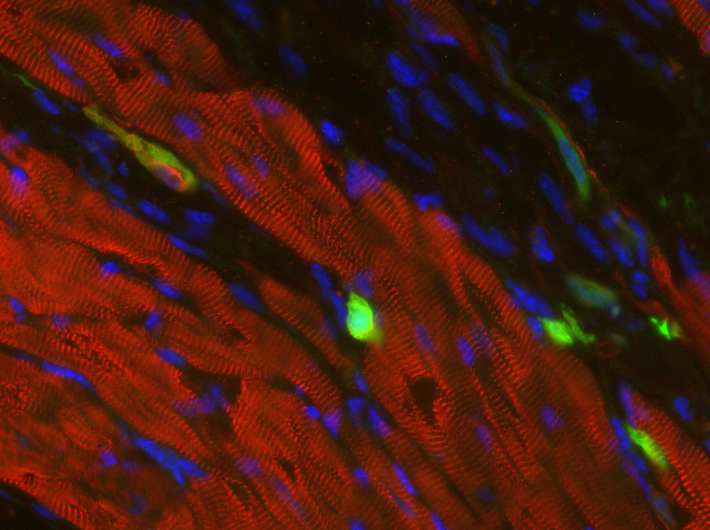

The Skin Gun
A Revolution in Dermal Regeneration
Kira Xie
Spring 2011

The surgeon inserts a cartridge of clear fluid into a machine attached
by a long tube to a small, pen-like device. The patient waits quietly.
The majority of the scorched skin has been removed from his arm,
leaving an oozing layer of mottled, pink skin. Unfazed, the doctor
proceeds to use his instrument to spray a cool, clear layer of liquid
over the open wounds, its blue light mesmerizingly moving back and
forth. A true Star Trek fan may believe this to be the dermal
regenerator used on multiple episodes to instantly heal skin injuries,
but they would be wrong. This surgeon is Jörg C. Gerlach, M.D., Ph.D.
from the University of Pittsburgh, and the clear fluid is an isolated
solution of the patient’s own stem cells; the device he is using,
informally dubbed the “skin gun,” is very real.
When most people think about the immune
system, they tend to think about a small army of cells inside the body
on constant patrol, killing any and all alien cells. What is often
forgotten is that the most important first line of defense against the
multitude of germs and bacteria in the air is the skin. The biggest
problem resulting from burn injuries is trying to keep the wounds clean
so that infections cannot take root before the skin has a chance to
grow back.
One way in which people try to accelerate
the healing process is by growing patches of new skin in a lab.
However, because the skin must be made from the patient’s own cells so
as not to be rejected, it cannot be made ahead of time. This process
can take several weeks. For smaller burns, it is sometimes possible to
take skin from a healthy area of the patient’s body and use it to cover
the burned portion. Unfortunately, this method has many limitations.
Dr. Gerlach’s solution to the limitations
associated with current skin grafting techniques is both elegant and
efficient. Using his method, a doctor would purify a sample of the
patient’s cells to isolate the stem cells. The stem cells are then
sprayed onto the open wound using the skin gun. The wound is then
covered with a bandage containing tubes that can be hooked up to an
artificial vascular system. This special bandage delivers fresh
antibiotics, amino acids, sugars, and electrolytes to the injured area
to speed the growth of new skin cells. The entire process only takes
about an hour and a half, and the injuries heal within three nights to
a week. Not only does this process highly expedite the process of
healing these skin injuries, but it also decreases the chance of
scarring as the new skin tissue is generated before the scars can begin
to form.
As of now, Dr. Gerlach’s method is
experimental and only effective for second degree burns and extensive
skin abrasions, but 12 people have been treated successfully. However,
Gerlach and his team are trying to develop a method to improve the
efficacy of the skin gun on third degree burns as well. Such advances
would be beneficial to millions of burn injuries that occur each year
(2.4 million per year on average in the US), and save the lives of
thousands of soldiers for whom time and sterility are not readily
available.
Dr. Gerlach’s device provides a fast and
practical fix for skin injuries. In times such as these people are
forced to realize that things once thought to belong solely to the
world of science fiction are slowly becoming reality. That being said,
who knows what advances the next few years will bring?